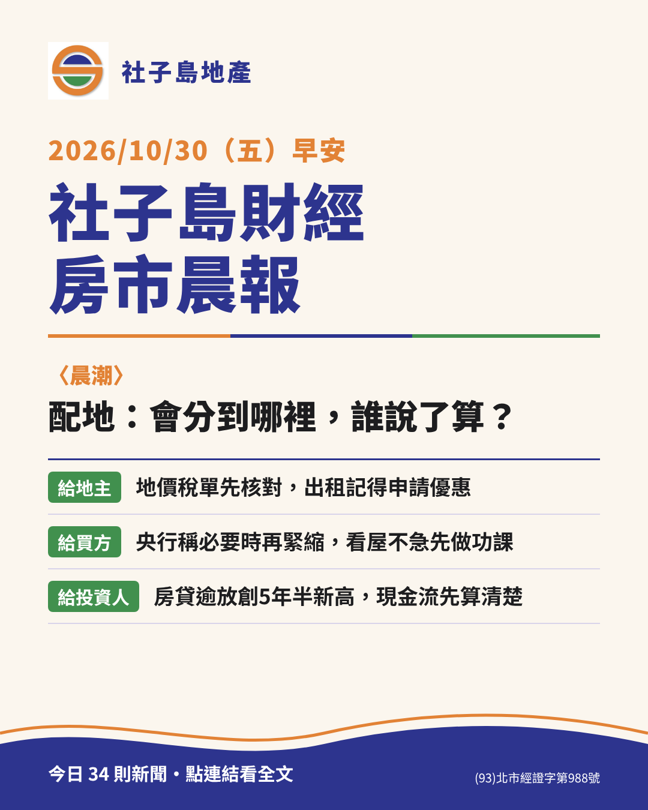

2026/10/30 (五) 早安
社子島財經房市晨報｜配地：會分到哪裡，誰說了算？
今日 34 則財經與房市新聞，依主題分成 11 類，社子島、主商圈與台北市的新聞排在最前面。點標題就能開啟原文。
〈潮汐表〉今天的三道潮水
- 給地主地價稅11月開徵，收到稅單先核對明細；房子有出租的，記得申請房屋稅優惠，別漏了這一步。
- 給買方央行理事說必要時會再緊縮，房市可能維持量縮價盤整；看屋不必急，功課要先做足。
- 給投資人國銀房貸逾放創5年半新高，寬限期也陸續到期；持有成本與現金流，要先算清楚。
〈晨潮〉
配地：會分到哪裡，誰說了算？
昨天我們說好，今天接著談後半段：如果選了抵價地，地會分到哪裡？配地怎麼進行？地主可以先做哪些準備？
先說一件很多人沒想到的事。區段徵收是把整片土地重新規劃，開發完成後，原本的地界、地號都會重新整理，抵價地要重新「分配」，所以分到的位置，通常不會是原來那一塊。那麼，誰先選、誰後選？各案會訂定分配作業規定，常見的做法是公開抽籤決定順序，再依序選擇街廓。重點我們整理在下面的小框裡。
配地，先記住這三點
- 區段徵收開發後重新分配，抵價地的位置通常不是原本那一塊。
- 選配順序依各案的分配作業規定辦理，常見做法是公開抽籤，再依序選擇街廓。
- 持分小、應領的抵價地不到最小分配面積時，可在規定期限內申請和其他地主合併。社子島的實際規定，以台北市政府公告為準。
地主現在可以先準備什麼？我們常建議三件事。第一，把權狀、持分與繼承登記先整理好，免得分配時才發現產權還沒釐清。第二，家人先談好，是要合在一起選一塊完整的地，還是各自分配。第三，想清楚這塊地將來要自用、出租、合建還是出售——想做的事不同，適合的街廓也不同。
順帶一提，市地重劃也有分配，但原則上依原有位置分配，和區段徵收不太一樣；今天的〈渡口〉就聊市地重劃。市場這頭，央行理事說必要時會再緊縮，國銀房貸逾放也創了5年半新高。不慌，但要穩。今天的新聞已經分好類，往下滑就能看到。
——社子島地產團隊
社子島焦點2 則
今天沒有社子島的新進度；放兩則區段徵收時程的背景報導
台北市3 則
與社子島同在台北市，政策與行情最有參考性
市地重劃・區段徵收1 則
全台各地的重劃與區段徵收進度
利率・房貸・資金4 則
央行態度、銀行風險與借款人的現金流
房市走向5 則
市場的溫度與買方心態
土地・產業用地3 則
企業與建商的買地動向
都更・老屋2 則
老屋多、整合難，重建的機會與阻礙
稅務與法律實務5 則
地價稅開徵前，地主與房東都該知道的眉角
士林北投與北台灣規劃3 則
主商圈的鄰居：關渡、洲美平原的規劃背景
高齡與人口2 則
長輩的居住與退休準備
今日財經大事4 則
開盤前先掌握的市場消息
〈堤外的話〉
今天的晨潮，談的是分配。
在社子島，很多人家的地是一代一代傳下來的，到了這一代，一張權狀上常常寫著好幾個名字。配地的時候，最難的往往不是規則，而是一家人坐下來，把話說開。
明天週六，我們換個角度，寫給正在找地的朋友：社子島、關渡平原、北士科，這三塊相鄰的土地，各自走到了哪一步？適合什麼樣的人？
如果您家裡也有一塊寫著好幾個名字的地，歡迎回覆，和我們聊聊。
〈渡口〉
堤外的話說到分配，若您的地也在重劃或區段徵收的範圍裡，正煩惱會分到哪裡，歡迎來渡口坐坐。
市地重劃後，地會變成什麼樣子、能分回多少，我們陪您從計畫書開始讀起。
不急著成交。我們是守在堤邊的人，守著每一塊土地的權益，直到把它交到願意耕耘它的人手上。
📞 歡迎先來電 0922-252-969先通個電話聊聊，再約時間見面喝茶。
 掃描 QR code，加 LINE 好友LINE ID：@shezidao💬 加 LINE
掃描 QR code，加 LINE 好友LINE ID：@shezidao💬 加 LINE
社子島地產團隊｜service@shezidao.com.tw
台北市士林區延平北路九段288號
週一至週六 9:30–18:00（週四 9:30–13:30），週日公休📞 來電 0922-252-969
本站由社子島地產開發有限公司經營，為民間不動產資訊網站，非臺北市政府官方網站；政府公告請以臺北市政府與地政局網站為準。
本期新聞由社子島地產團隊自經濟日報、聯合新聞網、自由時報、中時新聞網、工商時報、中央社、ETtoday、鉅亨網 等媒體收集，標題照原文，點擊即可開啟原始報導；法規說明僅供參考，實際權利義務以主管機關公告為準。〈晨潮〉〈堤外的話〉為本團隊之參考意見，不構成投資建議，亦不代表支持任何候選人。